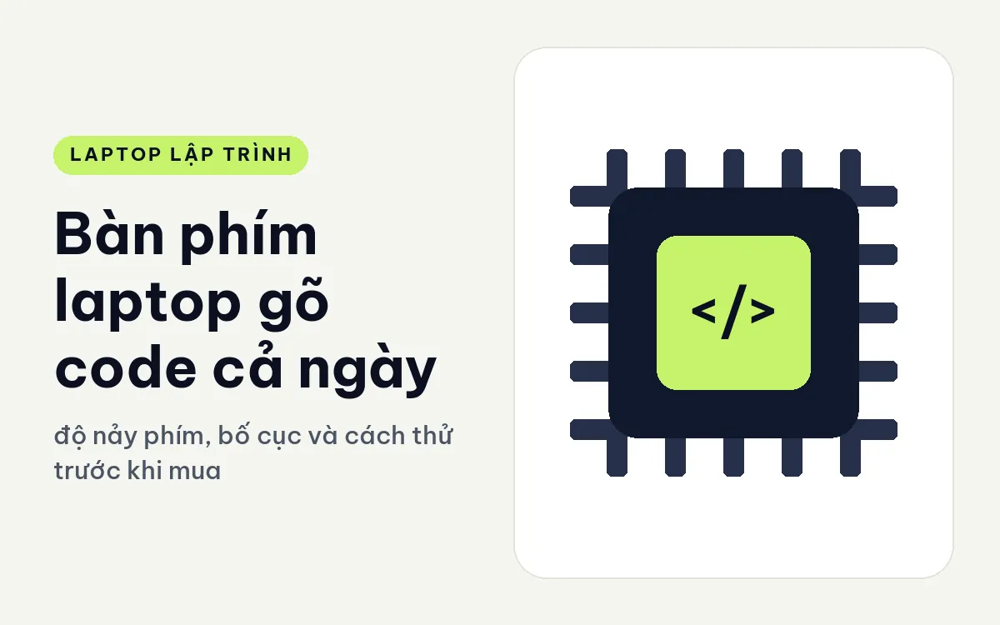
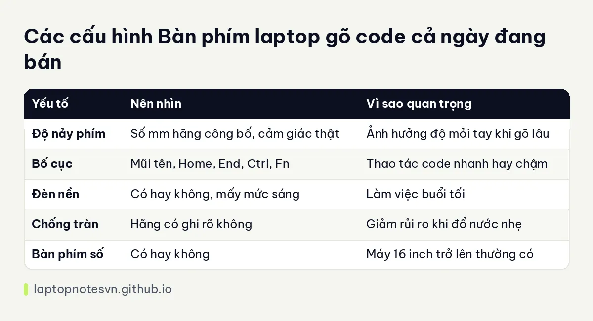

Bàn phím laptop gõ code cả ngày - độ nảy phím, bố cục và cách thử trước khi mua

Người viết code gõ hàng chục nghìn ký tự mỗi ngày, nhưng khi mua laptop, bàn phím thường được xem sau cùng, sau CPU và RAM. Đó là thứ dễ gây hối tiếc nhất, vì CPU thì nâng được hoặc đổi máy, còn bàn phím sai cảm giác thì bạn gõ mỗi ngày đều khó chịu. Một bàn phím tốt giúp gõ nhanh, ít sai và đỡ mỏi tay.
Bài này nói về những thứ làm nên cảm giác gõ, cách tự thử khi ghé cửa hàng và các máy đang bán có điểm đáng chú ý về bàn phím. Cảm giác gõ là chuyện cá nhân, nên tôi chỉ gợi ý tiêu chí chứ không có đáp án chung.
Những thứ làm nên cảm giác gõ
Độ nảy phím là khoảng phím đi xuống khi nhấn, tính bằng milimét. Phím nảy sâu hơn cho cảm giác gõ rõ, có phản hồi, nhiều người thấy dễ chịu khi gõ lâu. Phím nông hơn gọn hơn và cho phép máy mỏng, nhưng có người thấy gõ cứng và chóng mỏi tay.
Lực nhấn và độ phản hồi cũng quan trọng không kém: phím quá mềm dễ gõ nhầm, quá cứng thì mỏi ngón. Cảm giác nhả phím, tức phím bật lại thế nào, cũng ảnh hưởng đến tốc độ gõ.
Bố cục là phần dev rất cần để ý. Hãy xem phím mũi tên có đủ kích thước không, phím Home, End, Page Up, Page Down nằm ở đâu, phím Ctrl và Fn có bị đảo chỗ so với thói quen của bạn không. Một số máy mỏng gộp hoặc thu nhỏ các phím này, khiến thao tác chọn và di chuyển trong code chậm đi.
Đèn nền bàn phím hữu ích khi bạn làm việc buổi tối hoặc trong phòng tối. Còn bàn phím chống tràn là điểm cộng thực tế cho người hay đặt cốc cà phê gần máy, vì nước đổ nhẹ có thể chảy xuống rãnh thoát thay vì vào bo mạch.
Cách tự thử bàn phím
Đừng thử bằng cách gõ vài chữ. Hãy gõ một đoạn dài, khoảng một hai phút, gồm cả ký tự đặc biệt như dấu ngoặc, gạch dưới, dấu chấm phẩy mà code dùng nhiều. Kiểm tra xem phím nào thấy xa tay hoặc dễ nhấn nhầm.
Thử các tổ hợp bạn dùng thường xuyên, ví dụ chọn từng từ, chuyển dòng, chạy lệnh trong IDE. Nếu phím chức năng bị thay chức năng mặc định, kiểm tra phần mềm có cho đảo lại không.
Nếu bạn quen bàn phím rời, hãy chấp nhận laptop sẽ không giống. Một số người dùng bàn phím rời ở nhà và laptop chỉ để đi lại, khi đó yêu cầu về bàn phím laptop có thể nhẹ hơn.
Cuối cùng, đừng quên chuyện bạn quen bố cục nào. Người từng dùng bàn phím có phím Ctrl ở góc trái dưới sẽ thấy khó chịu nếu phím Fn chiếm vị trí đó, dù nhiều máy cho phép đảo hai phím này trong BIOS hoặc phần mềm của hãng. Việc nhỏ này tiết kiệm nhiều bực bội về sau.
Thói quen giữ tay khỏe khi gõ nhiều
Dù bàn phím tốt đến đâu, tư thế vẫn quyết định tay có mỏi hay không. Cổ tay nên nằm thẳng, không gập lên hay gập xuống, khuỷu tay gập khoảng góc vuông và vai thả lỏng. Laptop đặt thấp khiến bạn cúi và gập cổ tay, nên kê máy cao lên và dùng bàn phím rời là cách nhiều người chọn khi ngồi lâu.
Nghỉ ngắn mỗi giờ để duỗi tay, vặn cổ tay nhẹ nhàng cũng đáng làm. Nếu thấy tê hay đau kéo dài, đó là dấu hiệu nên gặp bác sĩ chứ không nên chịu đựng.
Bảng so nhanh

| Yếu tố | Nên nhìn | Vì sao quan trọng |
|---|---|---|
| Độ nảy phím | Số mm hãng công bố, cảm giác thật | Ảnh hưởng độ mỏi tay khi gõ lâu |
| Bố cục | Mũi tên, Home, End, Ctrl, Fn | Thao tác code nhanh hay chậm |
| Đèn nền | Có hay không, mấy mức sáng | Làm việc buổi tối |
| Chống tràn | Hãng có ghi rõ không | Giảm rủi ro khi đổ nước nhẹ |
| Bàn phím số | Có hay không | Máy 16 inch trở lên thường có |
Áp vào máy đang bán
Lenovo ThinkPad T14 Gen 7 (2026) ghi độ nảy phím 1,5 mm, nặng từ 1,29 kg. ThinkPad vốn được nhiều dev quen tay vì dòng phím này, nên nếu bạn gõ nhiều thì đây là điểm đáng thử trực tiếp.
Lenovo IdeaPad Slim 3 14 inch (2026) có độ nảy phím 1,3 mm, nặng 1,43 kg, pin 60Wh. Phím nông hơn một chút nhưng máy ở nhóm tiết kiệm. Đây là lựa chọn hợp người học code và cần máy phổ thông.
HP ProBook 4 G2i 14 AI (2026) có bàn phím chống tràn, cùng các cổng USB-C, USB-A, HDMI 2.1 và TPM 2.0, vân tay. Một máy thực tế cho văn phòng, hợp người làm việc ở nơi dễ vương nước.
Về những thứ khác bạn tiếp xúc hằng ngày như màn hình, bài màn hình 16:10 và độ phân giải khi code bổ sung phần còn lại.
Còn nếu cần so thêm về độ bền, ThinkPad T14 Gen 7 cho lập trình có đánh giá chi tiết.
Đăng ngày 09/11/2026